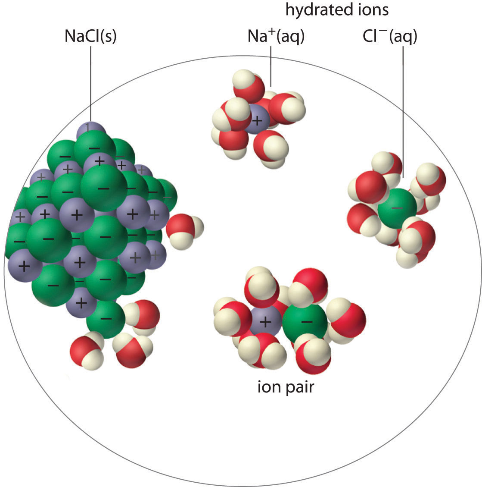
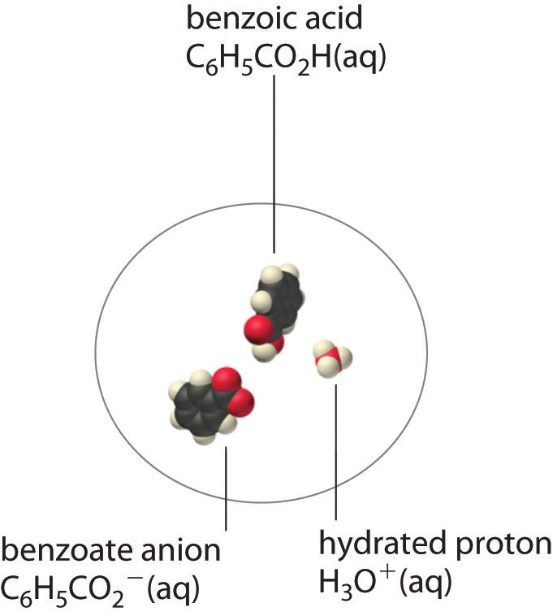

The solubility product of an ionic compound describes the concentrations of ions in equilibrium with a solid, but what happens if some of the cations become associated with anions rather than being completely surrounded by solvent? Then predictions of the total solubility of the compound based on the assumption that the solute exists solely as discrete ions would differ substantially from the actual solubility, as would predictions of ionic concentrations. In general, four situations explain why the solubility of a compound may be other than expected: ion pair formation, the incomplete dissociation of molecular solutes, the formation of complex ions, and changes in pH. The first two situations are described in this section, the formation of complex ions is discussed in Section 17.3 "The Formation of Complex Ions", and changes in pH are discussed in Section 17.4 "Solubility and pH".
An ion pairA cation and an anion that are in intimate contact in solution rather than separated by solvent. An ion pair can be viewed as a species that is intermediate between the ionic solid and the completely dissociated ions in solution. consists of a cation and an anion that are in intimate contact in solution, rather than separated by solvent (Figure 17.2 "Ion-Pair Formation"). The ions in an ion pair are held together by the same attractive electrostatic forces that we discussed in Chapter 8 "Ionic versus Covalent Bonding" for ionic solids. As a result, the ions in an ion pair migrate as a single unit, whose net charge is the sum of the charges on the ions. In many ways, we can view an ion pair as a species intermediate between the ionic solid (in which each ion participates in many cation–anion interactions that hold the ions in a rigid array) and the completely dissociated ions in solution (where each is fully surrounded by water molecules and free to migrate independently).
Figure 17.2 Ion-Pair Formation
In an ion pair, the cation and the anion are in intimate contact in solution and migrate as a single unit. They are not completely dissociated and individually surrounded by solvent molecules, as are the hydrated ions, which are free to migrate independently.
As illustrated for calcium sulfate in the following equation, a second equilibrium must be included to describe the solubility of salts that form ion pairs:
Equation 17.3
The ion pair is represented by the symbols of the individual ions separated by a dot, which indicates that they are associated in solution. The formation of an ion pair is a dynamic process, just like any other equilibrium, so a particular ion pair may exist only briefly before dissociating into the free ions, each of which may later associate briefly with other ions.
Ion-pair formation can have a major effect on the measured solubility of a salt. For example, the measured Ksp for calcium sulfate is 4.93 × 10−5 at 25°C. The solubility of CaSO4 should be 7.02 × 10−3 M if the only equilibrium involved were as follows:
Equation 17.4
In fact, the experimentally measured solubility of calcium sulfate at 25°C is 1.6 × 10−2 M, almost twice the value predicted from its Ksp. The reason for the discrepancy is that the concentration of ion pairs in a saturated CaSO4 solution is almost as high as the concentration of the hydrated ions. Recall that the magnitude of attractive electrostatic interactions is greatest for small, highly charged ions. Hence ion pair formation is most important for salts that contain M2+ and M3+ ions, such as Ca2+ and La3+, and is relatively unimportant for salts that contain monopositive cations, except for the smallest, Li+. We therefore expect a saturated solution of CaSO4 to contain a high concentration of ion pairs and its solubility to be greater than predicted from its Ksp.
The formation of ion pairs increases the solubility of a salt.
A molecular solute may also be more soluble than predicted by the measured concentrations of ions in solution due to incomplete dissociation. This is particularly common with weak organic acids. (For more information about weak organic acids, see Chapter 16 "Aqueous Acid–Base Equilibriums"). Although strong acids (HA) dissociate completely into their constituent ions (H+ and A−) in water, weak acids such as carboxylic acids do not (Ka = 1.5 × 10−5). However, the molecular (undissociated) form of a weak acid (HA) is often quite soluble in water; for example, acetic acid (CH3CO2H) is completely miscible with water. Many carboxylic acids, however, have only limited solubility in water, such as benzoic acid (C6H5CO2H), with Ka = 6.25 × 10−5. Just as with calcium sulfate, we need to include an additional equilibrium to describe the solubility of benzoic acid:
Equation 17.5
In a case like this, measuring only the concentration of the ions grossly underestimates the total concentration of the organic acid in solution. In the case of benzoic acid, for example, the pH of a saturated solution at 25°C is 2.85, corresponding to [H+] = [C6H5CO2−] = 1.4 × 10−3 M. The total concentration of benzoic acid in the solution, however, is 2.8 × 10−2 M. Thus approximately 95% of the benzoic acid in solution is in the form of hydrated neutral molecules—C6H5CO2H(aq)—and only about 5% is present as the dissociated ions (Figure 17.3 "Incomplete Dissociation of a Molecular Solute").
Incomplete dissociation of a molecular solute that is miscible with water can increase the solubility of the solute.
Figure 17.3 Incomplete Dissociation of a Molecular Solute
In a saturated solution of benzoic acid in water at 25°C, only about 5% of the dissolved benzoic acid molecules are dissociated to form benzoate anions and hydrated protons. The remaining 95% exists in solution in the form of hydrated neutral molecules. (H2O molecules are omitted for clarity.)
Although ion pairs, such as Ca2+·SO42−, and undissociated electrolytes, such as C6H5CO2H, are both electrically neutral, there is a major difference in the forces responsible for their formation. Simple electrostatic attractive forces between the cation and the anion hold the ion pair together, whereas a polar covalent O−H bond holds together the undissociated electrolyte.
There are four explanations why the solubility of a compound can differ from the solubility indicated by the concentrations of ions: (1) ion pair formation, in which an anion and a cation are in intimate contact in solution and not separated by solvent, (2) the incomplete dissociation of molecular solutes, (3) the formation of complex ions, and (4) changes in pH. An ion pair is held together by electrostatic attractive forces between the cation and the anion, whereas incomplete dissociation results from intramolecular forces, such as polar covalent O–H bonds.
Do you expect the actual molar solubility of LaPO4 to be greater than, the same as, or less than the value calculated from its Ksp? Explain your reasoning.
Do you expect the difference between the calculated molar solubility and the actual molar solubility of Ca3(PO4)2 to be greater than or less than the difference in the solubilities of Mg3(PO4)2? Why?
Write chemical equations to describe the interactions in a solution that contains Mg(OH)2, which forms ion pairs, and in one that contains propanoic acid (CH3CH2CO2H), which forms a hydrated neutral molecule.
Draw representations of Ca(IO3)2 in solution
Ferric phosphate has a molar solubility of 5.44 × 10−16 in 1.82 M Na3PO4. Predict its Ksp. The actual Ksp is 1.3 × 10−22. Explain this discrepancy.
9.90 × 10−16; the solubility is much higher than predicted by Ksp due to the formation of ion pairs (and/or phosphate complexes) in the sodium phosphate solution.